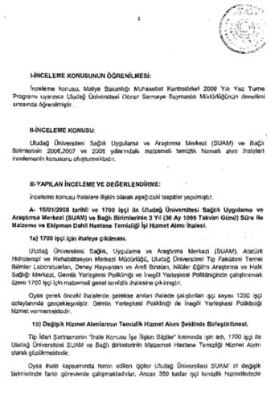

Gazi Üniversitesi
Gazi Üniversitesi ile ilgili 2008’de inceleme başlatan YÖK’e gönderilen belgede, Atatürk Orman Çiftliği (AOÇ) arazisine iş merkezi ve konut yapılmak üzere çıkılan ihalenin “iktidara ve Ankara Büyükşehir Belediye Başkanlığı’na yakın” olduğu ileri sürülen Kuzu İnşaat firmasında kaldığı ve ihalenin yüzde 42,6 ile sonuçlanmasına karşılık eski rektör Prof. Dr. Kadri Yamaç’ın bizzat devreye girerek üniversitenin payını yüzde 40’a düşürdüğü iddiası bulunuyor.
RedHack tarafından ele geçirilen belgelerde, Atatürk Orman Çiftliği’ne ait Çukurambar’da bulunan ve Gazi Üniversitesi tarafından alınan arazide nasıl bir yolsuzluk yapıldığına ilişkin önemli bilgiler bulunuyor.
Buna göre Gazi Üniversitesi Rektörlüğü, ilgili arsalarda iş merkezi ve konut yapılması için bir ihale açarken, ihaleyi AKP’ye yakın Kuzu İnşaat alıyor.
Ankara’nın en değerli alanlarından olan Çukurambar’daki bu ihale yüzde 42,6 ile bağlanıyor. Buna karşılık bölgede kat karşılığı ihaleler yüzde 60 ile kapanırken burada böyle bir adım atılıyor. Bununla da yetinmeyen üniversite eski rektörü Kadri Yamaç, yüzde 42,6’yı, yüzde 40’a kadar çekiyor.
Bir komisyoncuya düşen miktarın 5 milyon TL olduğu ileri sürülürken, rektörün burada çok daha büyük bir vurgun yaptığı ileri sürülüyor ve konuya ilişkin araştırma talep ediliyor.
